Batik
tailed-slug
Philinopsis cf. pilsbryi
Family Aglajidae
updated
May 2020
Where
seen? This small batik-patterned slug is sometimes seen
on some of our shores, burrowing among seagrasses and near living
reefs.
Features: 2-3cm. A long, cylindrical
body that appears to be made up of two parts. A pair of 'tails', one a little longer than the other. It has a
tiny internal shell. The black-and-white pattern can vary widely: from a black network on a white background, to white spots on a black background. The pattern extends onto the inside of
the parapodia, there are no blue markings on the front and back edges
of the parapodia.
What does it eat? Some species
eat bubble shell snails, hunting them
by following their slime trail then swallowing them whole. |
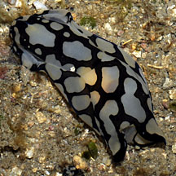
Cyrene Reef, Aug 08
Pulau Sekudu, Apr 06 |
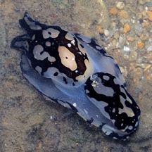
Pulau Semakau, Dec 08 |
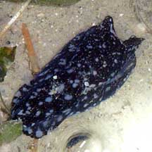
East Coast, Aug 09 |
| Batik
tailed-slugs on Singapore shores |
| Other sightings on Singapore shores |
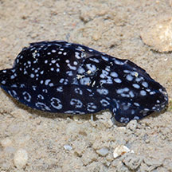
Changi, Aug 19
Photo
shared by Marcus Ng on facebook. |
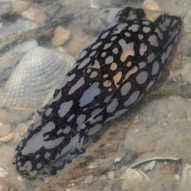
Changi, Dec 25
Photo
shared by Marcus Ng on facebook. |
|
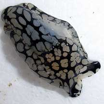
Beting Bronok, Jun 08
Photo shared by Chim Chee Kong on his
flickr. |
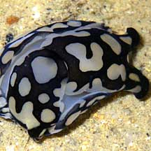
Beting Bronok, Jun 10
Shared
by Loh Kok Sheng on his
flickr. |
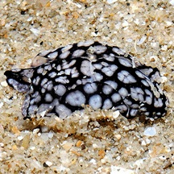
Changi East, Oct 11
Photo
shared by Loh Kok Sheng on his
blog. |
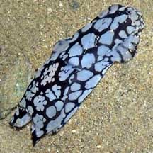
Tanah Merah, Sep 09
Shared
by Loh Kok Sheng on his
blog. |
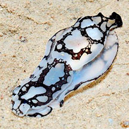
East Coast Park, Jun 13
Shared
by Loh Kok Sheng on flickr. |
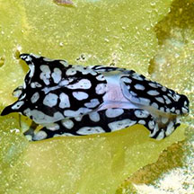
East Coast-Marina Bay, Oct 15
Shared
by Loh Kok Sheng on flickr. |
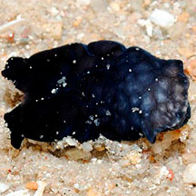
Cyrene Reef, Aug 12
Photo shared by Loh Kok Sheng on flickr. |
|
|
| Links
References
- Tan Siong
Kiat and Henrietta P. M. Woo, 2010 Preliminary
Checklist of The Molluscs of Singapore (pdf), Raffles
Museum of Biodiversity Research, National University of Singapore.
- Debelius,
Helmut, 2001. Nudibranchs
and Sea Snails: Indo-Pacific Field Guide IKAN-Unterwasserachiv, Frankfurt. 321 pp.
- Wells, Fred
E. and Clayton W. Bryce. 2000. Slugs
of Western Australia: A guide to the species from the Indian to
West Pacific Oceans.
Western Australian Museum. 184 pp.
- Coleman,
Neville. 2008. Nudibranchs
Encyclopedia - Catalogue of Asia/Indo Pacific sea slugs.
Neville Coleman's World of Water, Australia. 415pp.
- Gosliner,
Terrence M., David W. Behrens and Gary C. Williams. 1996. Coral
Reef Animals of the Indo-Pacific: Animal life from Africa to Hawaii
exclusive of the vertebrates Sea Challengers. 314pp.
- Kuiter, Rudie
H and Helmut Debelius. 2009. World
Atlas of Marine Fauna. IKAN-Unterwasserachiv. 723pp.
- Coleman,
Neville. 2008. Nudibranchs
Encyclopedia - Catalogue of Asia/Indo Pacific sea slugs.
Neville Coleman's World of Water, Australia. 415pp.
|
|
|